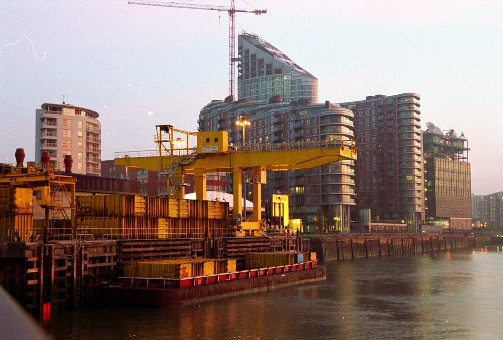

The most efficient strategy of effective waste handling is… to avoid producing waste altogether. No waste - no handling costs, no pollution, no landfills. But what can we do to reduce waste production? Various businesses produce a lot of waste. This is a very complex and costly problem to solve. However we are as consumers are still able to turn the table by affecting businesses decisions regarding what kind of products we want. This includes types of packaging, quantities and materials its made, the way it collected and utilized. People’s opinion may move businesses to the right direction and we already see such moves. For example recent taxation of plastic bags greatly reduced demand that in turn directed supermarkets to sell reusable bags.
But what are the other methods that we can do to improve our waste handling?
Excessive packaging can provide more security for the products. But they use a lot of recources to produce and can harm the environment.
It is tempting to buy a 10 cent bag for just one use and throw it away later. But this harms our planet. More and more are starting to sell reusable bags which can be recycled into something else.
Before you buy anything think twice about it. Maybe you dont really need it, maybe you can use something else to achive your goal.
There are things that you can do at home to improve waste handling. For example, sorting trash helps recycling companies to recycle it in more efficient way. If your country has different trash bins for different kind of trash, please use them, it helps a lot! if dont know what can/cannot be recycled, you can visit our Utilisation page.